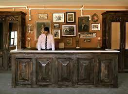

Curly Hotel
About Us
Gallery
Contact
Reservation
Registration
Announcement
HistoryEstablished by visionary entrepreneur Curly Turner in 1902, Curly's Hotel has woven a rich tapestry of hospitality over the decades. From its opulent gatherings during the Roaring Twenties to providing solace during World War II, the hotel has stood as a symbol of timeless elegance. Evolving with the Mid-Century Modern movement and seamlessly integrating digital advancements in the new millennium, Curly's Hotel has remained a beacon of luxury. Today, with a global presence, the hotel continues to honor its founding principles of impeccable service and attention to detail. As we step into the future, Curly's Hotel remains committed to creating enduring memories for each guest, embracing sustainability and community engagement. Join us in the next chapter of our history, where the legacy of Curly's Hotel continues to unfold. |
 |
|
 |